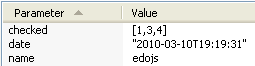
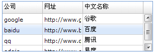

与所有的js框架一样，EdoJS也拥有自己的Ajax组件：Edo.util.Ajax，用于与服务端的数据交互。
我们通过一个简单的Ajax例子，来了解下EdoJS的Ajax组件使用方式：
首先，服务端有一个ajax-json.txt文件，内容如下：
[
{name: '谷歌', en_name:'google', site: 'http://www.google.com'},
{name: '百度', en_name:'baidu', site: 'http://www.baidu.com'},
{name: '腾讯', en_name:'qq', site: 'http://www.qq.com'},
{name: '易度', en_name:'edojs', site: 'http://www.edojs.com'}
]
Edo.util.Ajax.request({
url: 'ajax-json.txt',
type: 'get',
onSuccess: function(text){
//text就是从url地址获得的文本字符串
alert(text);
},
onFail: function(code){
//code是网络交互错误码,如404,500之类
alert(code);
}
});
Edo.util.Ajax是一个静态类，直接调用request方法，传递一个交互配置对象，就可以与服务端完成一次数据交互操作。
Edo.util.Ajax的配置对象注释如下：
{
type: "get", //交互方式:get,post
url: null, //数据源地址
params: null, //传递参数
async: true, //是否异步
timeout: 0, //超时设置,为0不设置超时
nocache: true, //不缓存
onSuccess: Edo.emptyFn, //成功回调函数
onFail: Edo.emptyFn, //失败回调函数
onOut: Edo.emptyFn //超时回调函数
}
我们可以发送很复杂的数据到服务端，服务端可以使用request对象来接收从页面使用ajax发送而来的数据，如果接收的数据是一个复杂的json字符串，在服务端可以使用一些Json序列化组件，将字符串转换为服务端数据对象，从而进行任意操作。
这里，我们可以使用Ajax配置对象的params属性，发送复杂数据对象：
Edo.util.Ajax.request({
url: 'dataService.aspx', //发送到一个动态页面地址
type: 'post', //使用Post方式,发送的数据可以突破255个字符限制
params: { //发送的数据对象,可以是一个复杂对象
name: 'edojs',
checked: [1,3,4],
date: new Date()
},
onSuccess: function(text){
//...
}
});
使用HttpWatch工具监听此次Ajax请求，截图如下：

在服务端，我们可以这样接收使用Ajax发送的数据：
string name = Request["name"]; string checks = Request["checked"]; string date = Request["date"]; //将复杂的json字符串,转换为服务端对象,从而进行任意操作 ArrayList checklist = Edo.util.Json.decode(checks);
这里演示的是.net的后台接收Ajax数据代码，不同的服务端语言，这种代码是大同小异的。
一般我们使用Ajax时，从后台获得的是一个json字符串。我们需要将这个json字符串转换为JS对象，从而更方便的进行操作，这里我们使用Edo.util.Json组件。
接第一个示例，我们将获得的json字符串，反序列化成JS数组后，打印第2行的name属性：
Edo.util.Ajax.request({
url: 'ajax-json.txt',
type: 'get',
onSuccess: function(text){
var obj = Edo.util.Json.decode(text);
alert(obj[1].name);
},
onFail: function(code){
//code是网络交互错误码,如404,500之类
alert(code);
}
});
当然，我们也可以把从服务端获得的数组数据，设置给某一个表格，从而显示为一个表格的列表数据，如下示例代码：
Edo.build({
id: 'tb', type: 'table', width: 300, autoColumns: true,
columns:[
{ headerText: '公司', dataIndex: 'en_name', editor: {type: 'text'} },
{ headerText: '网址', dataIndex: 'site' },
{ headerText: '中文名称', dataIndex: 'name', width: 150 }
],
render: document.body
});
var ajax = Edo.util.Ajax.request({
url: 'ajax-json.txt',
type: 'get',
onSuccess: function(text){
var json = Edo.util.Json.decode(text);
var data = new Edo.data.DataTable(json);
tb.set('data', data);
}
});
效果图如下：
